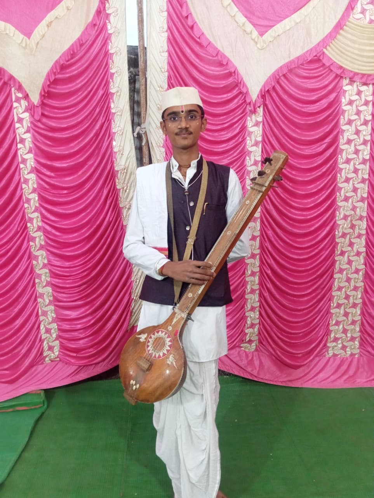
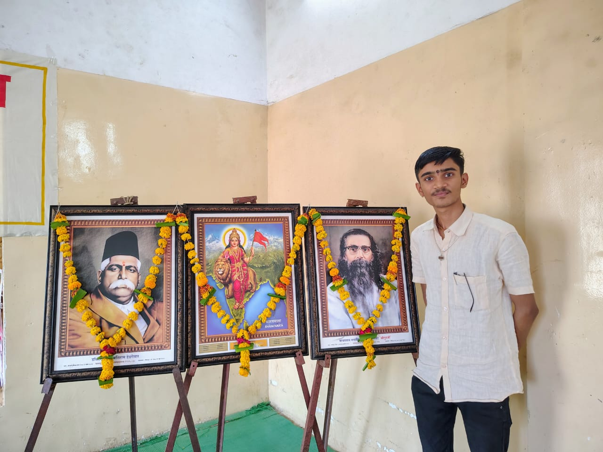
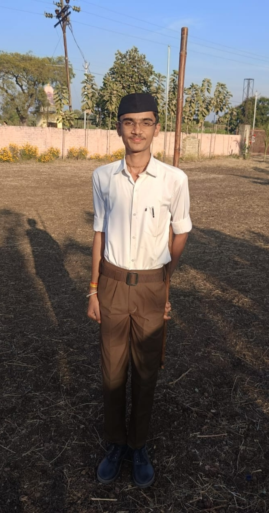
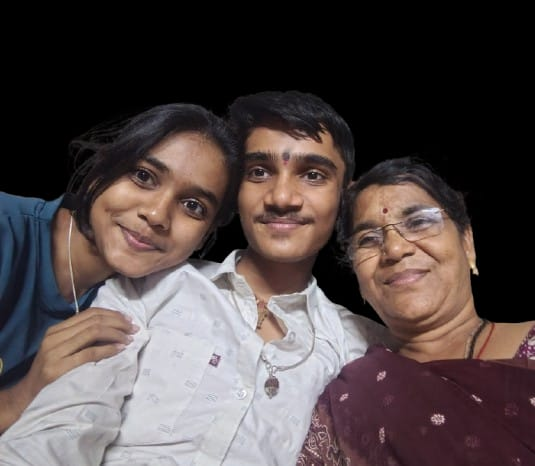
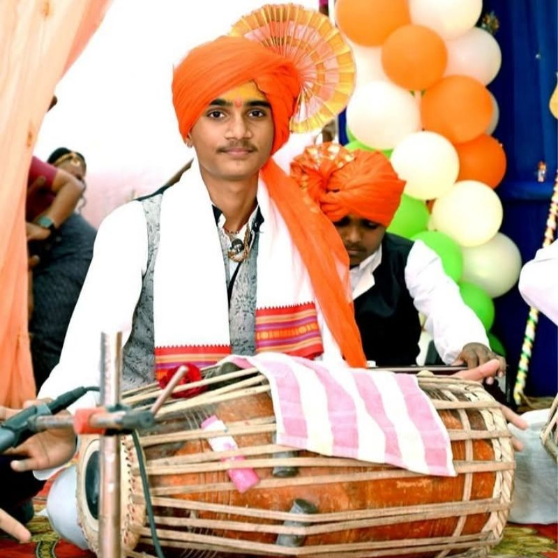
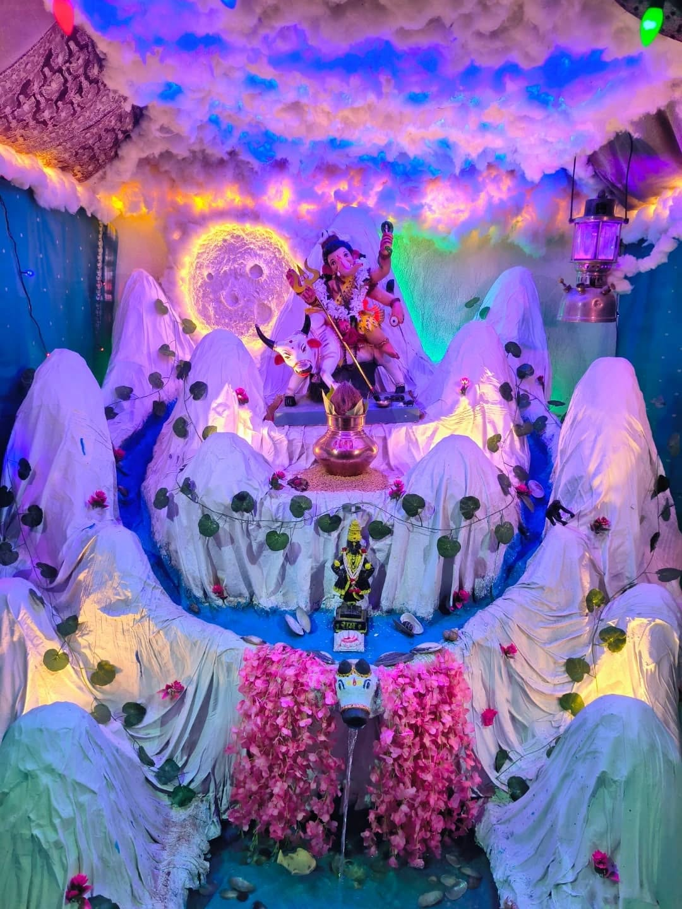
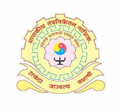

Ram Patil
I`m
Hi, I am Ram Patil. I am a simple, straightforward, and spiritually inclined young man from the Warkari tradition, as well as a Pakhawaj player.
I completed my 10th grade at Sahakar Vidya Mandir, Motala, securing 85.20%. Currently, I am pursuing a Diploma in Mechanical Engineering.
My life
Hello, my name is Ram Patil. I was born on September 27, 2010. Since childhood, my parents have showered me with love, affection, and good values. My father was a very loving, hardworking, and understanding man. He loved me dearly and cared deeply about every aspect of my happiness. My childhood was filled with joy in his company.
However, a great tragedy struck my life when I was in the seventh grade: my father passed away, leaving us forever. Our family faced many hardships during that time, but my mother did not lose heart; instead, she handled all responsibilities with immense courage. Fulfilling the roles of both mother and father, she provided us with love, support, and proper guidance. Consequently, I hold deep respect and pride for my mother; she is my inspiration and my true source of strength.
My fater wished for me to learn the Pakhawaj (a traditional Indian percussion instrument). Since I also have a keen interest in playing the Pakhawaj, I am striving to honor his wish. My father was associated with the Warkari sect, and thanks to the values he instilled in me, I feel a special affinity for spirituality, bhajans, kirtans, and the Warkari tradition. I am a simple young man, grounded in good values and spiritual thought. Additionally, I am a Swayamsevak (volunteer) with
the Rashtriya Swayamsevak Sangh (RSS) and strive to uphold a spirit of social service.
I have one singular, major goal in life: to ensure my mother happiness throughout her life . I can never forget the hard work, sacrifices, and struggles she endured for our sake. My dream is to always see a happy smile on her face. I aim to fulfill all her dreams by pursuing a good education, working honestly, and becoming a successful person. Living a life that makes my mother proud—that is the true purpose of my existence.



My Family
My family is very loving and supportive. We used to be a family of four: my father, mother, elder sister, and myself.My father Name is Rajendra nick name is chhagan. my mother name is Megha , my sister name is Shruti , and my name isRam . Life was filled with happiness and contentment when my father was with us. However, after his passing, our family faced many hardships. During those difficult times, my mother steadfastly shouldered all the responsibilities; she fulfilled the roles of both a father and a mother with immense dedication.
I still miss my father deeply, and his absence is constantly felt. Yet, thanks to my mother hard work and love, we are moving forward. Currently, the three oftive. We used to be a family of four: my father, mother, elder sister, and myself. My father name was us—my mother, my sister, and I—live together, supporting one another and leading a happy life.

My School life
My school life was truly joyful, inspiring, and unforgettable.My class is 10th B , During my time at school, I enthusiastically participated in various events, competitions, and activities. This boosted my self-confidence and gave me the opportunity to learn many new things. I had a special passion for playing the Pakhawaj, and I received excellent guidance in this field from Junare Sir . His teaching methods helped me further develop my artistic skills and deepened my love for music.
I had many friends at school. We studied together throughout the year, took part in various activities, and had a lot of fun. The moments spent with friends, the guidance from teachers, and my overall school experiences created many beautiful memories. My school life instilled in me knowledge, discipline, friendship, and good values—qualities that continue to play a significant role in my life today. I am really miss you sahakar Vidya Mandir and respected all teachers and my holl friends .
My Hobbies
Playing the Pakhawaj , learning new things, Made a decoration and experimenting with various projects are my favorite hobbies. In my spare time, I enjoy practicing the Pakhawaj and nurturing my passion for Indian classical music . I am also keen to explore new information across fields such as technology, engineering, and others. I enjoy creating projects based on various ideas, gaining hands-on experience, and mastering new skills. These hobbies help enhance my creativity, concentration, problem-solving abilities, and self-confidence. The process of constantly learning new things and applying them practically is what keeps me inspired.


I am currently Studying
I am currently pursuing a diploma in Mechanical Engineering at Government Polytechnic, Nashik. I have a keen interest in the field of engineering and am always eager to acquire new technical knowledge. Alongside my academic studies, I focus on developing my skills, understanding new technologies, and gaining practical knowledge. My goal is to become a skilled and successful mechanical engineer and make a significant contribution to the industrial sector.

My Education
I completed my 10th-grade education at Sahakar Vidya Mandir, Motala, securing 85.20% marks. Currently, I am pursuing a diploma in Mechanical Engineering. My goal is to learn new technical concepts, develop my skills, and carve out a distinct identity for myself in the future. I am striving to achieve significant success in life through sheer hard work, determination, and self-confidence.
About Me
I am a simple, quiet, and creatively inclined Marathi young man. Devotion to Lord Vitthal, the Warkari tradition, a passion for decoration, and a deep love for Lord Ganesha constitute significant parts of my life. I enjoy learning new things, generating various creative ideas, and approaching every task with wholehearted dedication.For me, relationships, cherished memories, and humanity hold immense importance. I firmly believe in moving forward with a smile on my face, no matter how many obstacles life may present. Living simply, dreaming big, and placing my faith in the fruits of my own hard work—this is the true essence of my personality.